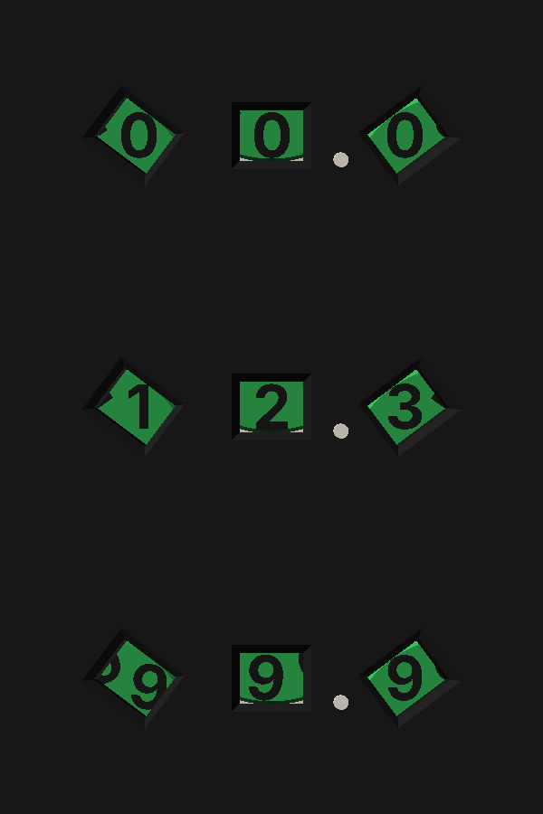
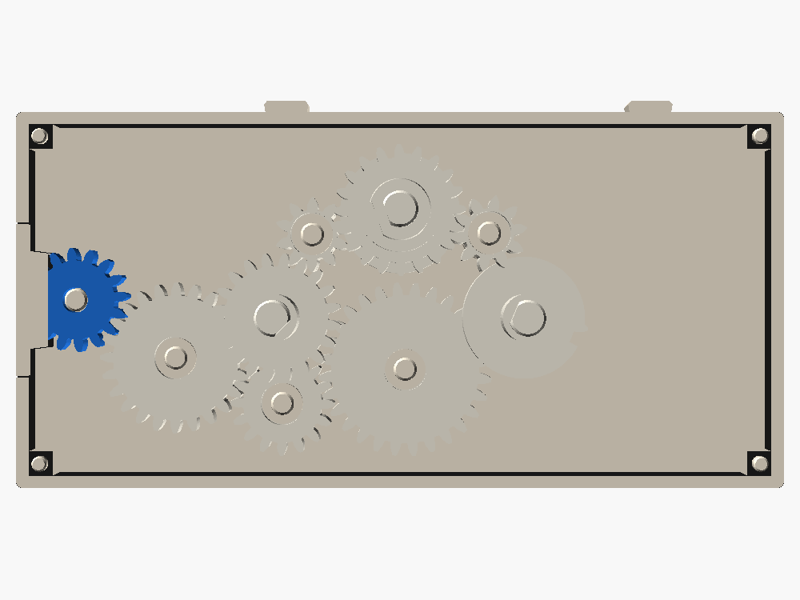
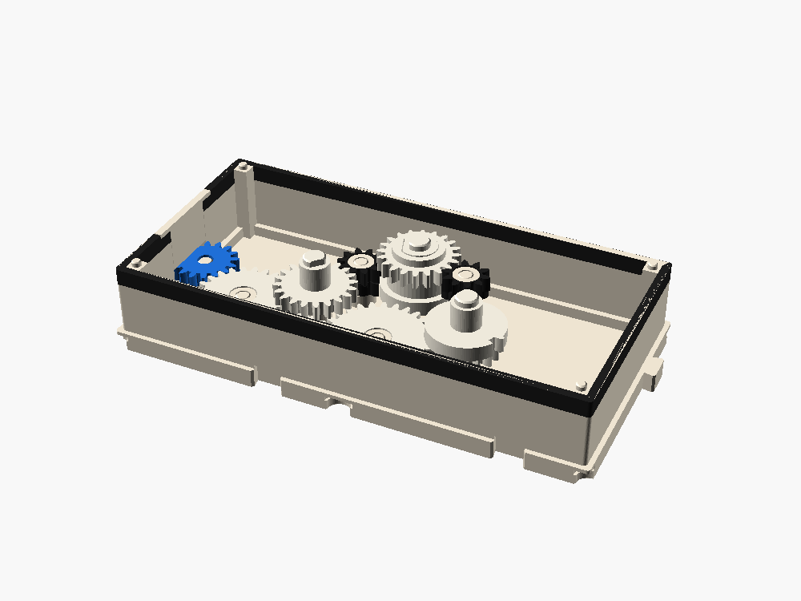
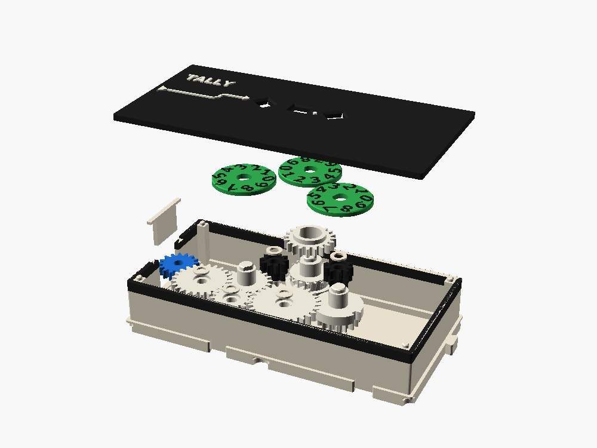

TALLY
A three-digit odometer for the line. It counts turns to a tenth, 00.0 to 99.9, on three digit wheels read through three windows in a row. It's TURNS with one more digit.


What it does
One turn of the line adds 1.0, a tenth of a turn adds 0.1, and after 99.9 it rolls over to 00.0. Put it at the end of a line, or on its own tap.
| Port | Side | Lane | Teeth | Layer | Role |
|---|---|---|---|---|---|
| W | W | B | 16 | 1 | input |
How it works

Input
W (16) → J (24) → K (16) → L (28) → U (16). Four meshes, so the tenths wheel U turns clockwise with the line, one turn per turn. TURNS does this in two meshes, but here U sits 77 mm from the port.
Two carries
- U carries a locking ring with one notch and one carry tooth. As U goes from 9 to 0, the tooth kicks pinion P1 round 72°, and P1's full teeth step the units wheel T one digit.
- T carries its own ring and tooth. As T goes from 9 to 0, it kicks P2 the same way, and P2 steps the tens wheel H.
Locked between counts. Between carries, each pinion's long teeth straddle the ring below it, so T and H can't move. Tapping the box won't knock the reading off.
The windows
Tens, units and tenths sit 15 mm apart in a row, with a raised decimal point. The wheels are 26 mm across, too big to stand side by side that close, so they stand in a V and each reads at its window from a different angle. The digits always come up upright.
The two-piece middle wheel
This was the open problem on the roadmap. T needs a lock on layer 1 and a 20-tooth gear on layer 3, with P2's teeth on layer 2 between them. In one piece, T can't go in after P2 and P2 can't go in after T.
| Layer | U (tenths) | P1 | T (units) | P2 | H (tens) |
|---|---|---|---|---|---|
| 3 | full 10 | 20 (T upper) | |||
| 2 | lock | long 10 | band | full 10 | 20 |
| 1 | 16 (drive) | 6 mm column | lock (T lower) | long 10 |
- T lower holds the lock, a band, and a D-shaped column (10 mm) that runs up to the digit wheel's key. It goes in first.
- P1 and P2 go in next, at rest, with their long teeth either side of the rings.
- T upper is the 20-tooth gear on a tube. It slides down the column, meshing P1 as it goes, and rests on the band. The digit wheel holds it down.
P1 stands next to T's lock with nothing of its own on layer 1, so its column is 6 mm instead of the standard 8 mm, and the carry tooth sweeps past it with 1.4 mm to spare.
Inside


Torque cost
8 stages: four meshes to U, then a carry and a mesh to T, then a carry and a mesh to H. Most of the time only the first four move. T gets a push once per turn and H once per ten turns. Give TALLY its own tap, or put it last on a line.
Parts
- Shell (bone, Readouts band), keeper, caps on J, K, L, P1 and P2.
- Lid in Readouts black, white raised lettering.
- Port W.
- Stacks J, K, L, U, P1, P2, H, T lower and T upper.
- Three digit wheels.
- Bought: nothing.
Drop-in order: W and its keeper; J, K, L; U; T lower; P1 and P2 at rest; the caps; T upper down the column; H; the three wheels at 0; the lid.
Checked
- Every moving part against every other, exported and intersected: clean at line turn 0, 170, 324, 340, 350 and 360 (U carries into T), at 3564, 3580, 3590 and 3600 (U into T into H at once), and at 35990.
- Fixed parts against each other: clean.
- The reading matches the model at 00.0, 12.3 and 99.9.
Verify when printed
- The double carry at 09.9 → 10.0, where U's tooth drives P1, T, P2 and H at once.
- T upper sliding on its column (0.15 mm a side), and whether it rocks.
- P1 on its 6 mm column.
- Whether a neighbor digit shows at the edge of the tilted windows.